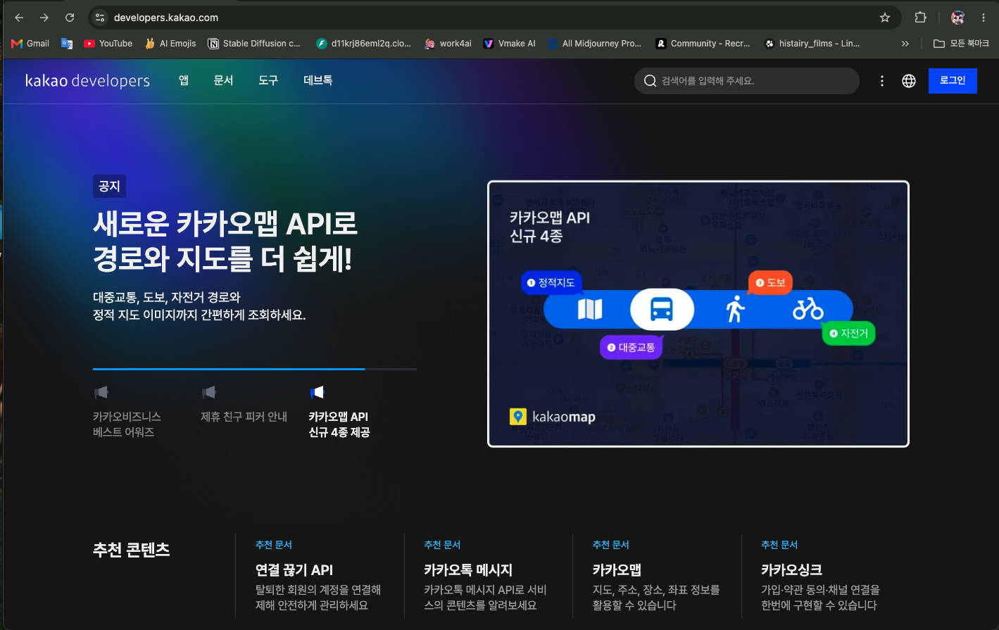
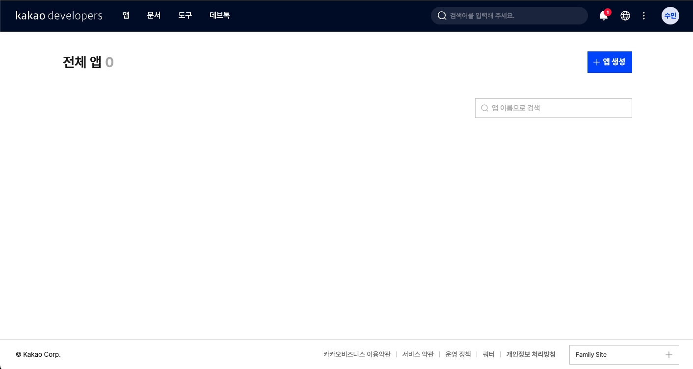
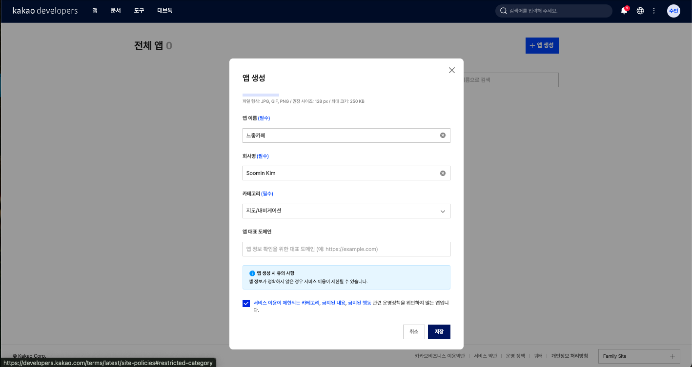
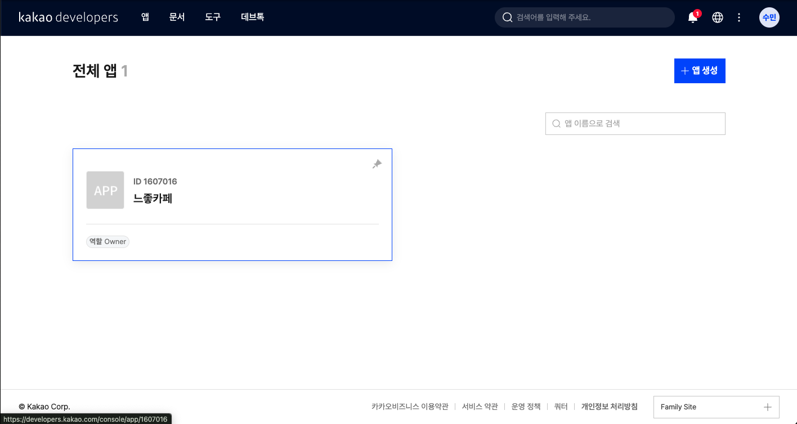
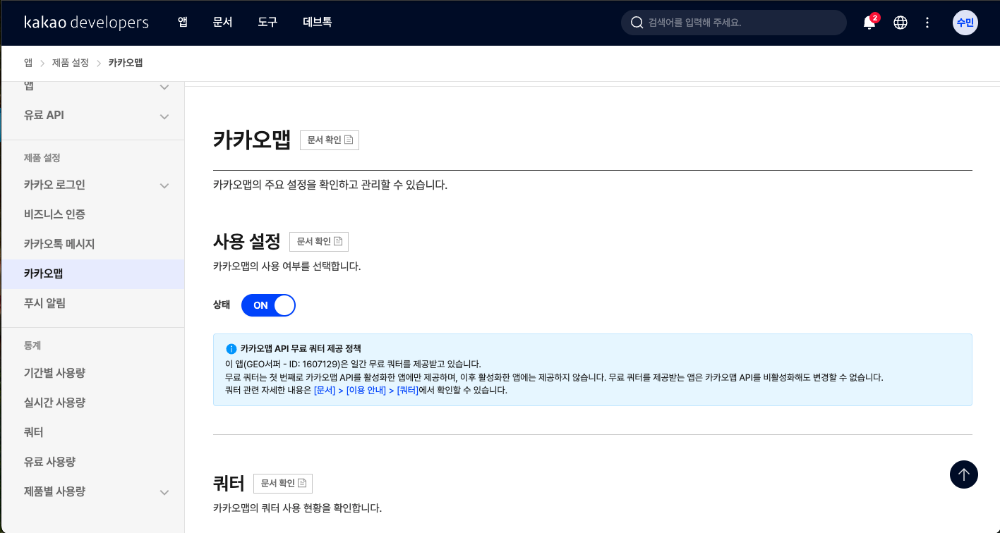
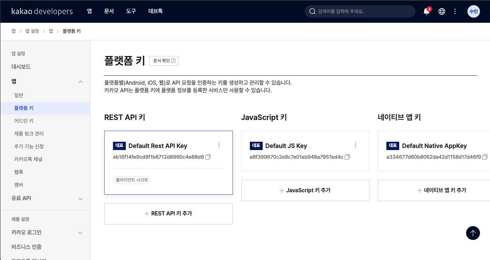
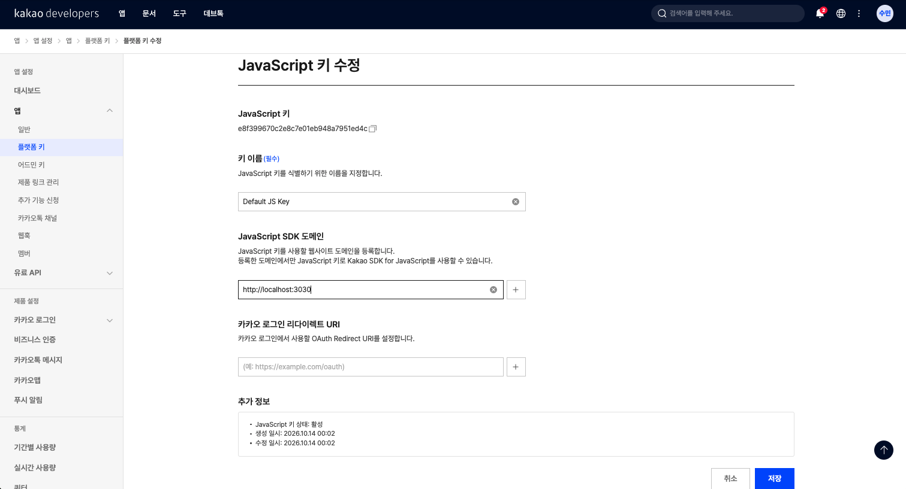

프로젝트 세팅하기
카카오맵 SDK 발급받기
느좋카페 지도를 띄울 카카오맵 JavaScript 키를 발급받고 로컬 도메인까지 등록합니다.
얻어갈 것
느좋카페는 지도 위에 카페를 보여주는 서비스라, 가장 먼저 지도를 띄울 수 있는 열쇠가 필요합니다. 카카오맵은 JavaScript 키로 지도를 불러오는데, 이 키는 Kakao Developers에서 앱을 만들고 발급받습니다.
카카오맵을 프로젝트에 붙이려면 코드보다 외부 서비스 설정이 먼저입니다. 우리 프로젝트를 카카오에 앱으로 등록하고, 로컬 개발 서버에서 JavaScript SDK를 쓸 수 있게 만드는 것이 이번 레슨의 목표입니다.
- Kakao Developers에 앱을 만들고 JavaScript 키를 발급받습니다.
- 카카오맵 제품 사용을 켜고, 개발 주소(
http://localhost:3030)를 플랫폼 도메인으로 등록합니다. - 발급받은 키를 프로젝트의
.env.local에 넣어 코드에서 안전하게 쓸 수 있게 합니다.
1. Kakao Developers 접속
developers.kakao.com에 카카오 계정으로 로그인합니다. 상단 메뉴의 내 애플리케이션으로 이동합니다.

2. 애플리케이션 만들기
아직 앱이 없다면 애플리케이션 추가하기(앱 생성)를 누릅니다. 앱 이름은 느좋카페, 회사명은 본인 이름, 카테고리는 지도/내비게이션으로 지정합니다.



3. 카카오맵 사용 설정 켜기
생성한 앱에 들어가 제품 설정 → 카카오맵에서 사용 설정을 ON으로 바꿉니다. 이걸 켜야 지도 API 쿼터가 할당됩니다.

4. JavaScript 키 확인
앱 설정 → 플랫폼 키로 가면 REST API 키, JavaScript 키, 네이티브 앱 키가 보입니다. 지도는 브라우저에서 불러오므로 JavaScript 키를 사용합니다.

5. 로컬 도메인 등록
JavaScript 키 수정 화면에서 JavaScript SDK 도메인에 개발 서버 주소 http://localhost:3030을 등록하고 저장합니다. 등록한 도메인에서만 키가 동작합니다.
http://localhost:3030처럼 프로토콜과 포트까지 정확히 맞춰 적습니다.- 개발 서버 포트를 바꾸면 카카오 콘솔의 도메인도 같이 바꿔야 합니다.
- 나중에 배포 도메인이 생기면
https://...형태의 실제 서비스 주소도 추가합니다.

6. 키를 프로젝트에 넣기
발급받은 JavaScript 키는 코드에 직접 박지 않고 환경변수로 관리합니다. 프로젝트 루트에 .env.local을 만들고 다음처럼 넣습니다. (실습 파일 VibeCafe.zip에 .env.local 템플릿이 들어 있으니, 키 값만 채우면 됩니다.)
# .env.local
NEXT_PUBLIC_KAKAO_MAP_KEY=여기에_발급받은_JavaScript_키
JavaScript 키는 브라우저에 노출되는 키라 도메인 등록으로 보호합니다. 등록되지 않은 주소에서는 지도가 뜨지 않으니, 개발 주소와 배포 주소를 모두 등록해 두세요.